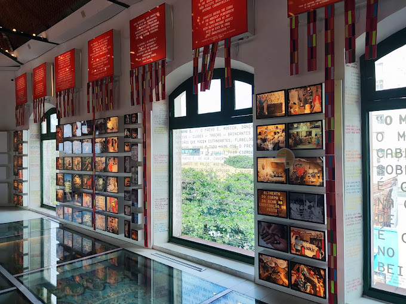
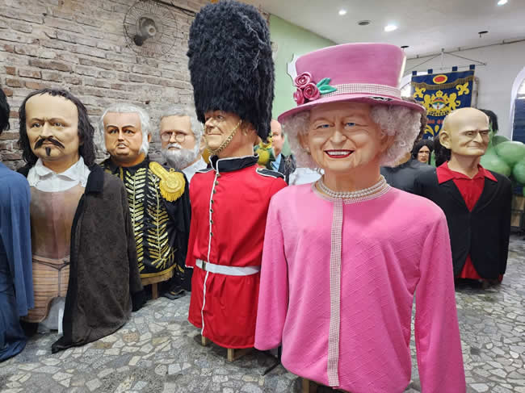

Paço do Frevo
O Paço do Frevo é um espaço cultural dedicado à preservação do frevo, um dos ritmos mais tradicionais de Pernambuco.
Embaixada dos Bonecos Gigantes
A Embaixada dos Bonecos Gigantes apresenta os famosos bonecos do carnaval de Olinda e Recife, uma tradição que encanta turistas e moradores.
Voltar para a página do Marco Zero.